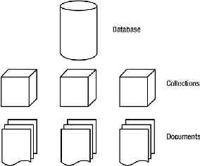
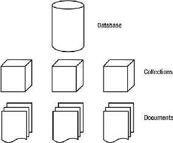

COORIENTADORA: Dra. Vera Regina Da Silva Marães

 DISSERTAÇÃO DE MESTRADO EM ENGENHARIA BIOMÉDICA
DISSERTAÇÃO DE MESTRADO EM ENGENHARIA BIOMÉDICA

UnB - UNIVERSIDADE DE BRASÍLIA
FGA - FACULDADE UNB GAMA
PROGRAMA DE PÓS-GRADUAÇÃO EM ENGENHARIA
BIOMÉDICA
OPEN GAIT ANALYTICS - IMPLEMENTANDO UM SOFTWARE COMO SERVIÇO PARA ANÁLISE E SIMULAÇÃO DE MARCHA HUMANA
Roberto Aguiar Lima
ORIENTADORA: Dra. Lourdes Mattos Brasil
COORIENTADORA: Dra. Vera Regina Da Silva Marães
DISSERTAÇÃO DE MESTRADO EM ENGENHARIA BIOMÉDICA
PUBLICAÇÃO: NUMERAÇÃO / 2015
BRASÍLIA/DF : Setembro - 2015


UnB - UNIVERSIDADE DE BRASÍLIA
FGA - FACULDADE UNB GAMA
PROGRAMA DE PÓS-GRADUAÇÃO EM ENGENHARIA
BIOMÉDICA
OPEN GAIT ANALYTICS - IMPLEMENTANDO UM SOFTWARE COMO SERVIÇO PARA ANÁLISE E SIMULAÇÃO DE MARCHA HUMANA
Roberto Aguiar Lima
DISSERTAÇÃO DE MESTRADO SUBMETIDA AO PROGRAMA DE PÓS-GRADUAÇÃO
EM ENGENHARIA BIOMÉDICA DA FACULDADE GAMA DA UNIVERSIDADE
DE BRASÍLIA, COMO PARTE DOS REQUISITOS NECESSÁRIOS PARA A
OBTENÇÃO DO GRAU DE MESTRE EM ENGENHARIA BIOMÉDICA.
APROVADO POR:
_______________________________
Prof. Dra. Lourdes Mattos Brasil
(Orientadora)
_______________________________________
Prof. Dra. Vera Regina Da Silva Marães
(Coorientadora)
____________________________________
Prof. Dra. Aline Araujo do Carmo
(Examinador Externo)

 ______________________________________________________
______________________________________________________
Prof. Dr. Jairo Simão Santana Melo
(Examinador Externo)


BRASÍLIA/DF , 01 DE Setembro DE 2015
FICHA CATALOGRÁFICA
REFERÊNCIA BIBLIOGRÁFICA
LIMA, R. A. (ANO). TÍTULO. Dissertação de Mestrado em Engenharia Biomédica, Publicação NO./ANO, Programa de Pós-Graduação em Engenharia Biomédica, Faculdade Gama, Universidade de Brasília, Brasília, DF, 119 p.
CESSÃO DE DIREITOS
AUTOR: Roberto Aguiar Lima
TÍTULO: OPEN GAIT ANALYTICS - IMPLEMENTANDO UM SOFTWARE COMO
SERVIÇO PARA ANÁLISE E SIMULAÇÃO DE MARCHA HUMANA
GRAU: Mestre
ANO: 2015
É concedida à Universidade de Brasília permissão para reproduzir cópias desta dissertação de

 mestrado e para emprestar ou vender tais cópias somente para propósitos acadêmicos e
científicos. O autor reserva outros direitos de publicação e nenhuma parte desta dissertação de
mestrado pode ser reproduzida sem a autorização por escrito do autor.
mestrado e para emprestar ou vender tais cópias somente para propósitos acadêmicos e
científicos. O autor reserva outros direitos de publicação e nenhuma parte desta dissertação de
mestrado pode ser reproduzida sem a autorização por escrito do autor.
_________________________________________________________________________
2015.
ENDEREÇO.
CEP: ..., Brasília, DF – Brasil


DEDICATÓRIA
Para ..., com amor.


RESUMO
OPEN GAIT ANALYTICS - IMPLEMENTANDO UM SOFTWARE COMO SERVIÇO PARA ANÁLISE E SIMULAÇÃO DE MARCHA HUMANA
Autor: Roberto Aguiar Lima
Orientadora: Profa. Dra. Lourdes Mattos Brasil
Coorientadora: Dra. Vera Regina Da Silva Marães
Programa de Pós-Graduação em Engenharia Biomédica
BRASÍLIA/DF 2015
Texto corrido sem parágrafo. 1 página.
Palavras-chaves: análise de marchar, aprendizado de máquina, joelho, simulação.


ABSTRACT
OPEN GAIT ANALYTICS - IMPLEMENTING A SOFTWARE AS A SERVICE FOR HUMAN GAIT ANALYSIS AND SIMULATION
Author: Roberto Aguiar Lima
Supervisor: Prof. Dra. Lourdes Mattos Brasil
Co-supervisor: Dra. Vera Regina Da Silva Marães
Post-Graduation Program in Biomedical Engineering
Brasília, Month of Year.
Texto corrido sem parágrafo. 1 página.
Key-words: gait analysis, machine learning, knee, simulation.


LISTA DE TABELAS


LISTA DE FIGURAS


 SPA Single Page Application
UnB Universidade de Brasília
URL Uniform Resource Locator
VM Virtual Machine
SPA Single Page Application
UnB Universidade de Brasília
URL Uniform Resource Locator
VM Virtual Machine


O presente trabalho visa iniciar um projeto de desenvolvimento de software como serviço para análise e simulação de marcha humana.
Os objetivos específicos são:
Foram usados os seguinte serviços web para o levantamento bibliográfico deste trabalho:


Foram utilizadas as seguintes chaves de pesquisa em cada um dos serviços acima: “Gait Analysis Software”.
Os artigos considerados mais relevantes para o trabalho foram escolhidos, levando-se em consideração, entre outros tópicos, a descrição de características interessantes a serem implementadas no software a ser desenvolvido.
Quando o assunto se trata de análise de marcha, a obra mais aclamada, inclusive citada em muitas das referências pesquisadas, é Perry e BurnField (2010). Como sugerido por Malas (2010), esta é uma obra obrigatória a qualquer um que deseje estudar análise de marcha.
Em Vieira et al. (2015) um sistema de análise e classificação de marcha é proposto como alternativa a soluções de mercado mais caras. A proposta inicial é coletar dados a partir de marcadores posicionados no corpo do paciente, através de câmeras de vídeo, classificando padrões de marcha com aprendizado de máquina.
Em Duhamel et al. (2004) é apresentada uma ferramenta para melhorar a confiabilidade de curvas para um paciente, classificar pacientes em determinadas populações e comparar populações. Trata-se de uma ferramenta estatística para análise de marcha.
Detecções de eventos do ciclo de marcha, são características interessantes para um software de análise de marcha. Em Ghoussayni et al. (2004) são documentados métodos para detecção de 4 eventos: contato do calcanhar, elevação do calcanhar, contato do dedão do pé e elevação do dedão do pé.
Uma comparação entre dois pacotes distintos para análise de marchar foi realizada por Moraes, Silva e Battistela (2003). Neste trabalho dados captados por câmeras e plataformas de força são coletados e passados aos pacotes de software Kin Trak e Ortho Trak.
Uma amostra de como um software pode ser utilizado para gerar bases de dados de
análise de marcha, é visto em Moreno et al. (2009). Neste artigo os autores capturam dados de
crianças sadias, afim de obterem padrões para serem utilizados em sistemas de análise de
movimentos.


Um sistema de aquisição e análise de marcha, foi desenvolvido e demostrado em Ferreira, Crisostomo e Coimbra (2009). Neste trabalho, o hardware para captura de dados e o software para análise dos dados, foram desenvolvidos num único projeto. Com os resultados gerados pelas análises feitas por este projeto, foi possível construir um robô bípede, que apresentou resultados satisfatórios caminhando num ciclo de marcha confortável.
A partir da análise de marcha, é possível criar métodos para se estabelecer o grau de desvio do ciclo de marcha que um paciente pode apresentar. Em Beynon et al. (2010) é apresentado o método Gait Profile Score. O método em si é um bom candidato a funcionalidade em um software de análise de marcha, pois serviria de auxílio clínico ao profissional da área de saúde. Uma outra funcionalidade inspirada no campo clínico é mostrado em Cippitelli et al. (2015). Neste trabalho os autores propõem a automatização do método Get Up and Go Test(GUGT), que é usualmente utilizado em análise de marcha no campo da reabilitação.


Conforme Baker (2007), Aristóteles (384-322 A.C.) pode ser considerado o primeiro a registrar comentários a respeito de como os humanos caminham. O autor ainda afirma que só na renascença que houveram progressos através de experimentos e teorizações feitas por Giovanni Borelli (1608-1679), e também que Jules Etienne Marey (1830-1904), trabalhando na frança e Eadweard Muybridge (1830-1904), tabalhando na américa, fizeram grandes avaços na área de mensuração. Ainda conforme Baker (2007), os maiores avanços no início do século vinte foram os desenvolvimentos das placas de força e o entendimento da cinética da marcha.
Na obra de Muybridge (1885), de antes do século vinte, ele busca sistematizar maneiras de se analisar o movimento humanho, principalmente usando técnicas de fotografia. A obra apesar de ser o resultado das pesquisas do autor, tem um valor artístico inegável. A Figura 1 dá o tom da obra.
Apesar dos avanços ocorridos na análise de marchar até meados do meio do século vinte, foi só após o advento dos computadores modernos que a análise de marcha clínica tornou-se amplamente disponível (BAKER, 2007).
Segundo Perry e BurnField (2010), para se classifcar as diferentes divisões da marcha é necessário separá-las em períodos (Periods), fases (Phases) e tarefas (Tasks), conforme a Figura 2.
A stride, que também é um sinônimo para um ciclo de marcha completo, equivale ao momento que, por exemplo, o pé direito toca o chão, sai do chão e o toca novamente. Dentro do ciclo de marcha temos também os períodos que são dois, stance e swing. O stance corresponde ao período que o pé toca o chão pela primeira vez e o deixa durante o ciclo. O swing é o perído que o mesmo pé deixa o chão e o toca novamente iniciando uma nova stance (PERRY; BURNFIELD, 2010).
Além dos perídos, como vemos na Figura 2, temos as fases. As fases representa um intervalo, percentual durante o ciclo da marcha e são muito importantes na avaliação do ciclo. Pois grandes variações nos sinais durante alguma fase, pode representar algum distúrbio a ser diagnosticado. São oito as fases (PERRY; BURNFIELD, 2010):
As tarefas são as funções desempenhadas durante o ciclo de marchar e estão relacionadas especificamente com as fases. A Figura 2 mostra o relacionamento entre as três tarefas e suas fases específicas. São elas (PERRY; BURNFIELD, 2010):


Pode-se começar este assunto pelos métodos de mensuração de movimentos espaciais e de ângulos. O método mais sofisticado hoje para análise de movimentos é o baseado em câmaras de vídeo. Inclusive Grip e Häger (2013), demonstra discorre sobre as vantagens dos sistemas de câmeras ópticas usando marcadores de superfície em detrimento de outras técnicas de captura de movimento. Neste tipo de técinca, os marcadores podem ser ativos ou passivos, a diferença é que os ativos emitem algum tipo de sinal luminoso ou infravermelho, por exemplo. Este método permite visualizar a posição espacial dos marcadores e a partir daí, calcular velocidades, acelerações, ângulos, velocidades angulares, acelerações angulares, etc. A Figura 3 mostra o modelo Oqus MRI da Qualisys, está é uma câmera muito utilizada no mercado não só para análise clínica mas também para captura de movimentos para serem iseridos em filmes e jogos de computador. Já a Figura 5 mostra o software QTM do mesmo fabricante, já com os dados capturados e animados na tela do computador. A Figura ?? é uma visão de uma possível configuração de câmeras, capturando marcadores de superfície passivos de um passiente.


Uma outra alternativa, que está sendo desenvolvida na FGA/UnB, é um dispositivo baseado em uma Unidade de Medida Inercial (Inertial Measurement Unit - IMU). Segundo ??)Leite2014), esta é uma alternativa não visual para extrair parâmetros cinemáticos da marcha humana, trajetória e velocidade. O trabalho foi realizado comparando-se os resultados fornecidos pelo dispositivo e captura de vídeo. A Figura 6 mostra um experimento onde o vídeo e os dados do IMU são coletados ao mesmo tempo


Na Figura 7, é possível visualizar o resultado dos dados coletados do IMU e da câmera. Veja que é um resultado bem promissor. Mas a maior vantagem do dispositivo, ainda não foi discutida, seu baixissimo valor em relação a solução com várias câmeras.
Eletrogonomiometros, também são usados para capturar angulções em articulações, basicamente este aparelho provê uma voltagem que é representativa da mudança de ângulo entre duas superfícies, nas quais o dispositivo é fixado (K. Ibrahim et al., 2012). A principal vantagem deste dispositivo é que seu custo é baixo. A Figura 8 mostra um exemplo de eletrogonomiometro.
A muito tempo vários métodos para desenvolvimento de software são propostos. Em 2001, um grupo de pessoas muito experientes em desenvolvimento de software, juntaram-se em Salt Lake City, Utah, para resolverem problemas de desenvolvimento de software (GREENE; STELLMAN, 2014). Como resultado deste encontro, foi criado o manifesto ágil, que é reproduzido a seguir (BECK et al., 2001):
Estamos descobrindo maneiras melhores de desenvolver software, fazendo-o nós mesmos e ajudando outros a fazerem o mesmo. Através deste trabalho, passamos a valorizar:
Indivíduos e interações mais que processos e ferramentas;
Software em funcionamento mais que documentação abrangente;
Colaboração com o cliente mais que negociação de contratos;
Responder a mudanças mais que seguir um plano.
Ou seja, mesmo havendo valor nos itens à direita, valorizamos mais os itens à esquerda.
Meses após a criação do manifesto, estas pessoas também criaram os princípios ágeis e a Aliança Ágil (LAYTON, 2012).
Os princípios ágeis são um conjunto de 12 itens com o objetivo de auxiliar na implantação de metodologias ágeis. Eles são reproduzidos a seguir a título de ilustração (BECK et al., 2001):
1. Nossa maior prioridade é satisfazer o cliente através da entrega contínua e adiantada de software com valor agregado.
2. Mudanças nos requisitos são bem-vindas, mesmo tardiamente no desenvolvimento. Processos ágeis tiram vantagem das mudanças visando vantagem competitiva para o cliente.
3. Entregar frequentemente software funcionando, de poucas semanas a poucos meses, com preferência à menor escala de tempo.
4. Pessoas de negócio e desenvolvedores devem trabalhar diariamente em conjunto por todo o projeto.
5. Construa projetos em torno de indivíduos motivados. Dê a
eles o ambiente e o suporte necessário e confie neles para fazer o
trabalho.


6. O método mais eficiente e eficaz de transmitir informações para e entre uma equipe de desenvolvimento é através de conversa face a face.
7. Software funcionando é a medida primária de progresso.
8. Os processos ágeis promovem desenvolvimento sustentável. Os patrocinadores, desenvolvedores e usuários devem ser capazes de manter um ritmo constante indefinidamente.
9. Contínua atenção à excelência técnica e bom design aumenta a agilidade.
10. Simplicidade–a arte de maximizar a quantidade de trabalho não realizado–é essencial.
11. As melhores arquiteturas, requisitos e designs emergem de equipes auto-organizáveis.
12. Em intervalos regulares, a equipe reflete sobre como se tornar mais eficaz e então refina e ajusta seu comportamento de acordo.
Este manifesto serviu de marco agregador de métodos e técnicas, que já existiam a época, mas não eram amplamente difundidas como Scrum, Extreme Programming, kanban, lean, entre outros. Estas técnicas, apesar de anteriores ao manifesto, possuem em seus cernes, muito em comum com os valores ágeis. A Figura 9 tenta ilustrar esta ideia.
A adoção dos métodos ágeis hoje é praticamente unanimidade. Isto se deve aos modelos de desenvolvimento adotados até a década de 1990. Esses modelos eram na sua grande maioria baseados no modelo waterfall, que imitava uma linha de produção onde o software era desenvolvido em fases. A saída de cada fase era a entrada da próxima. A Figura 10 mostra um exemplo de processo baseado no modelo waterfall. O maior problema do modelo waterfall, era que este foi completamente averso a mudanças de requisitos. Hoje, é notório que a grande maioria dos softwares necessitam ser bastante receptivos a mudanças.
O trabalho Runyan e Ashmore (2014) compara o modelo waterfall como o modelo ágil. Esta comparação é resumidamente apresentada na Tabela 1.
Como evolução do modelo waterfall, surgiram os processos baseados em modelos iterativos. A diferença agora é que o processo de desenvolvimento passa a ser baseado em ciclos. Cada ciclo passa por cada uma das fases do waterfall. Este tipo de processo, apresentava melhoras, mas ainda era concebido sob a forma de um processo que visava resolver problemas determinísticos, como o das linhas de produção das fábricas. Mas, como descrito em Beck (2004), o processo de se construir software é mais parecido com o ato de dirigir. O motorista sabe o destino a que quer chegar, porém, durante o percurso pode haver um acidente e tem-se que mudar um pouco a rota, ou alguém está passando por uma faixa de pedestre e necessita-se parar, ou ainda um sinal de transito pode ficar vermelho. Esta é a principal motivação para que este trabalho privilegie métodos ágeis de desenvolvimento.


O Scrum, segundo Rubin (2012), é um método ágil para desenvolvimento de produtos e serviços inovadores. A Figura 11 mostra uma visão geral do Scrum.
Basicamente, o fluxo do scrum consiste na criação de um backlog de produto. Este backlog é uma lista de requisitos a serem implementados no processo de desenvolvimento, e é mantido e priorizado pelo product owner. A lista em si pode receber contribuições dos mais diversos envolvidos no processo, mas a última palavra na priorização é sempre do product owner. A orientação mais aceita para a priorização dos requisitos, é levar em conta aqueles que mais gerarão valor para o usuário final, no momento em questão (SCHWABER; BEEDLE, 2001).
A próxima etapa no fluxo é a reunião de sprint. Esta reunião consiste na demonstração das funcionalidades implementadas na última iteração e na seleção das funcionalidades que serão construídas na próxima iteração. As funcionalidades são escolhidas pelos desenvolvedores, que se comprometem a entregá-las ao final da iteração (SCHWABER, 2004).
Após a reunião do sprint, inicia-se a iteração. A iteração é também chamda de sprint e consiste num prazo de alguns dias ou alguns meses. Isto depende do projeto em questão. Geralmente sprints menores são mais aconselhados, uma semana por exemplo (SCHWABER, 2004).
Durante a iteração ou sprint, ao final do dia preferencialmente, realiza-se uma reunião de inspeção diária. Esta reunião é também chamada de daily scrum. Nesta reunião, os envolvidos diretamente no desenvolvimento do produto ou serviço, expõe o andamento de suas atividades pessoais e os impedimentos para a conclusão destas. A reunião é feita com todos de pé, e cada um dispõe apenas de alguns minutos de exposição, por exemplo, 3 minutos. A intromissão de pessoas externas deve ser evitada. A ideia é manter a objetividade e o foco nas tarefas do sprint. Ao final da reunião o scrum master deve procurar intender todos os impedimentos expostos. A partir deste conhecimento ele deve tomar medidas necessárias para removê-los, assim garantindo o bom funcionamento da equipe de desenvolvimento. Ao final do sprint um incremento, ou seja, um pedaço de software com funcionalidades implementadas é construído e preferencialmente implantado. O próximo passo é uma nova reunião de sprint.
Os papéis definidos pelo scrum são (SCHWABER, 2004):

Nas organizações existirão outros papeis, como gerentes, diretores, patrocinadores, usuários finais, entre outros. O importante a se observar, é que apenas os três papeis, product owner, scrum master e desenvolvedor, é que fazem parte da equipe scrum. Os demais papeis participam do projeto, mas é necessário, o entendimento por parte da organização, que demandas de implementação devem ser colocadas no backlog do produto. Só o product owner pode priorizar os novos requisitos. Sem este entendimento e comprometimento, fica inviável respeitar prazos e escopo, tornando o processo caótico (SCHWABER, 2004).
Devido ao Scrum servir de espinha dorsal a um processo de desenvolvimento ágil, também sendo amplamente utilizado pelo mercado de desenvolvimento de software, ele foi selecionado como método de gestão deste trabalho. Todo o processo do Scrum pode ser minunciosamente estudado em Schwaber e Beedle (2001).
Histórias do usuário é uma técnica que vem em detrimento da produção massiva de requisitos. Até hoje é comum achar projetos de desenvolvimento de software, com documentos de requisitos enormes. Com raras exceções, este não é um modelo muito produtivo. O grande problema é que muitas vezes gasta-se muito tempo, às vezes anos, para se criar estes documentos. Enquanto isso pouco ou nada de software funcional é produzido. Uma consequência comum desta demora, são as prioridades dos usuários mudarem, ou seja, o que foi especificado inicialmente, depois de um ano, por exemplo, já não tem o mesmo valor para os mesmos (PATTON, 2014).
De acordo com Cohn (2004) histórias do usuário descrevem funcionalidades que serão de valor para um usuário ou comprador de um sistema de software. Histórias do usuário são compostas por três aspectos:
Histórias do usuário podem ser documentadas usando-se story cards. Um exemplo é mostrado na Figura 12.
No story card em questão, a parte superior é a descrição do item que é de valor para um usuário. A parte inferior relata testes que devem ser executados. Estes testes também servem para determinar se a história do usuário foi completamente implementada ou não (COHN, 2004).
Dentro de uma metodologia como o Scrum, as histórias de usuário podem ser utilizadas para comporem o backlog do produto. Elas são excelentes durante a fase de planejamento do sprint (HANLEY, 2015).
Como as histórias do usuário são documentos mais informais, é necessário que as mesmas sejam mais detalhadas durante o processo de desenvolvimento. Isto pode ser feito com uma conversa entre o desenvolvedor e o product owner. Pode se chegar a conclusão que a história é na verdade um ”épico”, ou seja, é uma história composta de outras histórias. Neste caso a história dever ser quebrada e suas partes enviadas para planejamento novamente (COHN, 2004).
A ideia de software como serviço é bastante difundida atualmente. Redes sociais, serviços de busca, serviços de streaming de vídeo, são amplamente usados por todos. Segundo Fox e Patterson (2012) software como serviço, é definido como o software que entrega software e dados como serviços sobre a Internet, usualmente via um programa como um browser que roda num dispositivo cliente local, em detrimento de código binário que precisa ser instalado e que roda totalmente no dispositivo.
Várias vantagens são citadas em Fox e Patterson (2012), tanto para usuários quanto para desenvolvedores de software. São elas:
 3.
3. Para quem duvida do poder do software como serviço, é só observar que produtos consagrado como o Microsoft Office já possuem versão como serviço, no caso o Microsoft Office 365. Outros exemplos seriam o Twitter, Facebook, entre outros.
Neste item serão analisados os components, frameworks e ferramentas que foram selecionadas para construção do Open Gait Analytics. Este software será um serviço disponibilizado via web, sendo assim, estas tecnologias são próprias para este fim.
O AngularJS é um framework de aplicação web. Ele foi projetado especificamente para rodar
em browsers que suportam HTML 5. Ele também é adequado a criação de aplicações web que
rodam em smartphones. É um framework bastante completo e rico para sua finalidade. A
referência Branas (2014) é um guia introdutório conciso no assunto. Segundo Freeman (2014),
outro guia no assunto, o AngularJS se baseia no padrão de projeto Model-View-Controller

 (MVC) e sua enfase é em permitir a criação de aplicações: extensíveis, manuteníveis, testáveis
e padronizadas. A Figura 13 mostra uma representação de uma aplicação fazendo uso do
AngularJS.
(MVC) e sua enfase é em permitir a criação de aplicações: extensíveis, manuteníveis, testáveis
e padronizadas. A Figura 13 mostra uma representação de uma aplicação fazendo uso do
AngularJS.
Segundo Williamson (2015), a Figura 13 mostra o diagrama de uma aplicação AngularJS e os componentes MVC. Uma vez que a apliação é lançada, os componentes model, view e controller, juntamente com todos os documentos HTML são carregados no desktop ou smartphone do usuário e rodam completamente num destes hardwares. A aplicação AngularJS conversa com o backend via o protocolo http. O backend é um servidor web que mantém chamadas REST (explicado na seção 2.4.5), sendo responsável pela execução da lógica e de processos de negócio. Outra característica bastante apreciada pelos desenvolvedores que usam AngularJS, é a possibilidade de criar single-page aplications (SPA). SPAs são aplicações que tem uma página HTML de entrada. Esta página tem seu conteúdo dinamicamente adicionado e removido da mesma. Esta abordagem permite criar aplicações bastante interativas, lembrando mesmo, aplicações desktop escritas em linguagens como Visual Basic e Delphi.
.
O angular-seed, é um template para projetos web que utilizam o AngularJS. Ele facilita bastante o processo de configuração e padronização do projeto. Ele cria um layout de diretórios padronizado, préconfigura a ferramentas de build e também já préconfigura o ambiente de testes unitários web/javascript usando a ferramenta JASMINE. Mais informações sobre o angular-seed em Google (2015a).
Os usuários profissionais da área de saúde, dificilmente se interessariam por um software
complexo sem uma interface atraente e amigável. Uma solução para minimizar este problema é
a adoção da biblioteca angular-material. Esta biblioteca, como indicado pelo seu nome, é
construída com o AngularJS. Ela disponibiliza serviços e diretivas que podem ser usados para
construir a interface gráfica da aplicação. Diretivas são componentes que podem ser inseridos
diretamente no código HTML da aplicação, dando a aparência de estender a própria HTML.
Por exemplo, a diretiva md-button da biblioteca é um tipo de botão que não é próprio do
HTML. Outros exemplos de diretivas são: caixas de diálogos, barras de ferramentas,
barras de progresso, grades, tooltip, etc. Esta biblioteca é baseada na especificação
Material Design criada pela empresa Google. A especificação discorre sobre padrões de
designe gráfico e interação com usuário e é baseada no princípio da metáfora de

 materiais. Esta metáfora é uma teoria unificada de um espaço racionalizado e sistemas de
movimento, isto segundo Google (2015b). Outra vantagem da biblioteca é que ela é
projetada para se adaptar a diferentes tipos de dispositivos com telas de tamanhos
diferentes.
materiais. Esta metáfora é uma teoria unificada de um espaço racionalizado e sistemas de
movimento, isto segundo Google (2015b). Outra vantagem da biblioteca é que ela é
projetada para se adaptar a diferentes tipos de dispositivos com telas de tamanhos
diferentes.
Os browsers modernos hoje, inclusive os dos smartphones, suportam o novo padrão WebGL. Este é um padrão web multi-plataforma de API) de baixo nível para gráficos 3D, expostos através de HTML. Este padrão suporta o acesso da API usando-se a linguagem GLSL. Uma vantagem desta API é que ela suporta nativamente GPUs disponibilizadas pelo hardware que está executando o cliente web. Isto torna possível até mesmo a criação de jogos de alta definição em 3D que rodam no browser (MATSUDA; LEA, 2013).
O problema com a WebGL é que, como dito anteriormente, a API é de baixo nível. No contexto de computação gráfica, isto significa que ela fornece primitivas básicas para modelagem 3D e outras opções de otimização do hardware. Para resolver este problema bibliotecas em javascript foram desenvolvidas, disponibilizando funções e objetos de alto nível, como cilindros, planos, esferas, animações, entre outros. Uma opção é o ThreeJS, descrito em Dirksen (2015). Esta biblioteca apresenta um grande número de funcionalidades e é possível encontrar aplicações e jogos em 3D de nível profissional. Um exemplo de animação renderizada que utiliza ThreeJS é mostrada na Figura 14. Mais exemplos podem ser vistos no site threejs.org.
O Representational State Transfer (REST) foi primeiramente descrito por Fielding (2000). Ele é definido como um estilo arquitetural de sistemas hipermídia e tem as seguintes características descritas por Grinberg (2014):
A principal ideia de serviços REST é o fornecimento de recursos. Por exemplo, o cliente requere um usuário, blog, comentários, entre outros. Cada recurso deve possuir uma URL que o identifica unicamente, por exemplo, http://www.minhaurl.com.br/usuario/123, onde 123 é um identificador único do usuário.
Para que um serviço REST funcione, ele precisa ser implementado para suportar
requisições HTTP, ou seja, ele teria que ser um servidor web completo. A biblioteca escolhida
para desempenhar esta função foi a Flask. Esta é uma biblioteca escrita na linguagem Python e
fornece todos as ferramentas necessárias para criar aplicações webs. Segundo Maia (2015), o

 Flask vem sendo adotado, por sua filosofia minimalista que não impõe uma arquitetura
específica de projeto, assim permitindo que um projeto comece pequeno e simples, evoluindo
para um modelo mais complexo.
Flask vem sendo adotado, por sua filosofia minimalista que não impõe uma arquitetura
específica de projeto, assim permitindo que um projeto comece pequeno e simples, evoluindo
para um modelo mais complexo.
A Cerebellar Model Articulation Controller (CMAC) foi criada por James Sacra Albus (ALBUS, 1975a). Ele se inspirou no cerebelo dos mamíferos para criá-la. O mesmo autor havia feito um extenso trabalho sobre o funcionamento do cerebelo (ALBUS, 1971). Trabalho este, que resultou numa tese de doutorado (ALBUS, 1972). Aplicações da CMAC podem ser vistas em (ALBUS, 1975b), (ALBUS, 1979), (SABOURIN, 2006) e (LIN; SONG, 2002).
Na Figura 15 é possível ver o funcionamento básico da CMAC. Os sinais S entram no sistema, que mapeiam o mesmo para um conjunto de pesos W* que devem ser somados para ativação. Note que apenas uma pequena fração de pesos é realmente selecionada para participar na ativação. O conjunto de pesos disponíveis na CMAC é necessariamente maior que o número de pesos ativados W*.
A CMAC da Figura 15 também pode ser classificada como um sistema Multiple Input Single Output (MISO), ou seja, suporta a entrada de vários sinais de entrada e processa um sinal de saída. Para se produzir uma CMAC Multiple Input Multiple Output MIMO, bastaria implementar várias MISOs, compartilhando as mesmas entradas.
Os passos para que o sinal seja computado são descritos a seguir. Estes passos são os mesmos descritos em Albus (1975a).
Primeiramente, define-se o número de pesos NW* a serem ativados para comporem a saída da CMAC.
O segundo passo é quantizar os possíveis valores para cada item do vetor de entrada S. Por exemplo, se o primeiro item s1 de S aceita valores de -1 até 1 e se quer 5 valores possíveis, quantiza-se então os valores de -1 até 1, conforme Figura 16.
Isto significa que quaisquer que sejam os valores de s1 os mesmos devem ser convertidos para -1, -0,5, 0, 0,5 e 1. Por exemplo, se o valor de s1 for 0,75, será convertido para o valor 1, se for -0,75 será o valor 0 e se for 0,25 será o valor 0,5. A esta quantização dá-se o nome de resolução da CMAC (ALBUS, 1975a).
O próximo passo é criar uma tabela para cada um dos sinais discretizados de entrada do vetor S. Supondo que o vetor S possui 2 sinais de entrada s1 e s2 e um número de ativações NW* igual a 3, deve-se criar duas tabelas, uma para cada sinal, conforme se apresentam na Tabela 2 e na Tabela 3. Para facilitar o entendimento, irá se considerar os valores possíveis de s1 iguais aos inteiros de 1 até 6 e os valores possíveis de s2 iguais aos inteiros de 1 até 4. Cria-se uma coluna com os valores do sinal em questão. Para cada valor, cria-se 3 (NW*) valores novos. Para o primeiro valor do sinal, usa-se os 3 primeiros inteiros não negativos. Para o segundo valor do sinal, substitui-se o primeiro dos três itens pelo próximo número após o terceiro item do sinal anterior. Para o terceiro sinal, substitui-se o segundo dos três itens pelo próximo inteiro não negativo. Assim, sucessivamente conforme a Tabela 2 e Tabela 3 (ALBUS, 1975a).


Depois de mapeado cada valor de cada item de entrada, deve-se combinar os mapeamentos de acordo com a Tabela 4.


O mapeamento da Tabela 4 é feito da seguinte forma (ALBUS, 1975a): Coloca-se cada valor quantizado de s1 nomeando cada uma das linhas da tabela. Coloca-se cada valor discretizado de s2 nomeando cada uma das colunas das tabelas. Cada célula da tabela é obtida recuperando-se os itens de s1 e de s2, que estão na Tabela 2 e na Tabela 3, e concatenando-se cada item de acordo com sua posição. Por exemplo, para o valor de s1 igual a 5, recuperam-se os itens (6, 4, 5), para o valor de s2 igual a 2, recuperam-se os itens (3, 1, 2). Agora é só criar novos itens, na mesma quantidade do valor NW*, concatenando-se cada item de acordo com sua posição. O lista resultante é ((6, 3), (4, 1), (5, 2)).
Cada vetor de 2 posições da Tabela 4, por exemplo (0, 0), (4, 1), é um rótulo de uma entrada na tabela de pesos W.
Para se calcular a saída do sistema, suponha que os valores de s1 e s2, ainda sejam 5 e 2, respectivamente, e NW* ainda seja 3. Neste caso, recupera-se o item da linha 5 e da coluna 2, que é ((6, 3), (4, 1), (5, 2)). Agora é acessada a tabela de pesos W e são recuperados os pesos cujas chaves são (6, 3), (4, 1) e (5, 2). Note-se que serão recuperados exatamente 3 pesos, que é exatamente o número de ativações NW* desejadas. Os valores recuperados constituem um vetor chamado W*. A saída é calculada somando-se os valores de W*.
Sendo a CMAC uma Rede Neural Artificial (RNA) com aprendizado supervisionado, seus pesos podem ser atualizados simplesmente computando-se o erro e atualizando-se apenas os pesos que participaram do computo do sinal P (HAYKIN, 1998). O processo é detalhado nos próximos parágrafos.
Para se treinar a CMAC, primeiro define-se o conjunto de dados para treinamento que devem ser usados. Pode ser usado algo entre 20% e 50% dos dados coletados para desenvolvimento do sistema. Cada item destes dados deve conter um vetor de sinais de entradas S e a resposta desejada D para estes sinais. A tabela de pesos deve ser inicializada com valores randômicos. Para cada vetor S deve ser calculado o vetor W*, que contém os endereços dos pesos a serem ativados. Calcula-se, então, a saída da rede P para o vetor S, conforme definido no item 2.5, somando os itens do vetor W. Atualizam-se os pesos sinápticos conforme a Equação 1 adaptada de Sabourin, Yu e Madani (2012).


 | (1) |
A variável wi é um item qualquer dentro da tabela de pesos W. Em cada iteração no conjunto de dados para treinamento, deve-se atualizar apenas os pesos descritos em W* naquele momento. A variável α é o coeficiente de aprendizado, deve ser um valor entre 0 e 1. A variável NW* é o número de valores a serem utilizados para ativação, que consequentemente equivale ao número de itens do vetor W*.
Deve-se determinar o número de iterações batch para o sistema. Uma iteração batch consiste no processamento dos pesos para cada item dentro do conjunto de dados para treinamento (NG, 2015). O sistema deve continuar iterando até atingir o número de iterações batch.
Apesar do número de iterações batch ser válido como critério de parada para o
treinamento da CMAC, nada impede o uso de outros critérios, por exemplo, o erro quadrado
médio da saída Y em relação ao desejado D.


Como este trabalho trata de um projeto de desenvolvimento de software na área de análise de marcha, dois ambientes de trabalho distintos foram amplamente utilizados. São estes:
No LIS foram desempenhadas as tarefas relativas a engenharia de software e disponibilização do software. Foram utilizadas estações de trabalho do tipo Power Mac com sistema operacional MAC OS X 10.10.3, sendo que uma foi preparada para funcionar como servidor de aplicação e roteador de rede. A estação preparada serve de hospedeira de duas máquinas virtuais (Virtual Machines - VMs) rodando através do software Virtualbox 4.3. Cada VM utiliza sistema operacional Debian Wheezy GNU/Linux. Uma destas VMs foi configurada como roteador e firewall e a outra como servidor de aplicações. Outra estação de trabalho Power Mac, idêntica, e um notebook rodando Ubuntu 14.04 GNU/Linux foram utilizados como máquinas de desenvolvimento e simulação. Um diagrama da rede criada no LIS é mostrado na Figura 17.
O LPH/FCE foi utilizado para captura de dados de marcha humana. Este laboratório está equipado para coletar dados de plataformas de força, eletromiógrafos e de marcadores posicionados no corpo do paciente através de câmeras de vídeo Oqus-MRI, usando técnicas de (Motion Capture - MOCAP), ver Figura 3. Para este trabalho foi utilizado o software QTM 3.2 da Qualisys, ver Figura 5, que é responsável pela coleta de de dados MOCAP.
Os dados coletados para testar o sistema, são dados cinemáticos, capturado através de motion capture, utilizando-se de várias câmeras Qualisys Oqus MRI, com marcadores passivos e pacote de software QTM 3.2 da Qualisys. Os dados foram convertidos para formato adequado à linguagem Octave. Foram usados dados capturados de um sujeito, no LPH da FCE/UnB. Foi selecionado um sujeito sadio, do sexo masculino. Este repetiu um ciclo de marcha de aproximadamente 5 segundos, por 5 vezes. Os dados trazem variáveis espaciais, com respeito a posição dos marcadores. Os marcadores estão distribuídos em 34 posições nas duas pernas. Com estes dados foram possíveis cálculos de angulações, velocidades angulares e acelerações angulares. O projeto no qual ocorreu a coleta foi aprovado pelo Comitê de Ética da Faculdade de Saúde da UnB, processo N11911/12.
Este trabalho tem como foco estabelecer uma metodologia de desenvolvimento inicial a um sistema de análise e simulação de marcha. Ele não busca ser extensivo o suficiente para criar um produto pronto para o mercado, mas pretende, através da implementação de funcionalidades reais, estabelecer uma arquitetura mínima e funcional que sirva de base para a construção do sistema. Como consequência, o projeto também integra os principais componentes desta arquitetura, por exemplo, o serviço de banco de documentos, com a Application Program Interface (API) web. Um software como este, robusto o suficiente para ser viável no mercado, seria muito caro. Por exemplo, um desenvolvedor sênior no mercado de Brasília, não custaria menos de R$ 100.000,00 por ano para uma empresa.
Apesar deste trabalho ter um objetivo específico e delimitado, dele nasce um projeto maior,
cuja visão é o desenvolvimento de um software como serviço para análise e simulação de

 marcha, utilizando o estado da arte em técnicas para este fim. O software deve ser construído
utilizando-se métodos ágeis e terá uma arquitetura adaptável que permita evolução
contínua.
marcha, utilizando o estado da arte em técnicas para este fim. O software deve ser construído
utilizando-se métodos ágeis e terá uma arquitetura adaptável que permita evolução
contínua.
A estratégia é lançar a versão inicial do software como projeto de código livre, conseguir parceiros e procurar um modelo de negócio sustentável para mantê-lo.
O software terá um modelo de gestão baseado no método SCRUM, como definido em 2.2.1. O método não é adotado na plenitude, sendo adaptado segundo as limitações de recursos do projeto.
Nesta fase inicial, o processo conta com um desenvolvedor, que também assume o papel de scrum master, e um product owner. Devido ao tamanho reduzido da equipe e da localização distinta dos membros, não há daily scrum, mas problemas de trabalho cotidianos são resolvidos por telefone, email ou mensagens instantâneas.
O princípio de time boxing é mantido. Ficou definido que o sprint consiste do prazo de duas semanas. Ao final do sprint uma reunião em duas fases é realizada. A primeira fase consiste na revisão do sprint anterior. Já a segunda fase é o planejamento do próximo sprint.
Um backlog de produto é mantido. Na reunião de final de sprint é criado um backlog de sprint. Os itens de backlog são mantidos na forma de estórias de usuários, conforme 2.2.2. Na Figura 18 é apresentada a visão geral do processo.
O modelo de arquitetura no seu nível mais elevado, pode ser visto como um modelo de três camadas, conforme a Figura 19.
A camada web é responsável pela interação com o usuário. A camada Web API é responsável pela lógica de negócio. A camada de base de documentos é responsável pela persistência dos dados da aplicação.
Esta camada foi projetada para rodar em browsers que suportam HTML 5. Ela é desenvolvida usando-se Javascript, CSS e HTML. Além disso, adotou-se o framework de desenvolvimento web AngularJS, ver 2.4.1.
Como o projeto não possuía recursos adequados a criação de uma equipe de desenvolvimento web completa, afim de se minimizar os problemas com design web, optou-se por usar a biblioteca angular-material, ver 2.4.3.
A Figura 20, mostra um exemplo de uma tela criada com as diretivas do angular-material. Note que todo o look and feel da tela é determinado pelo comportamento padrão da biblioteca.


; 2) Diretiva md-input-container; 3) Diretiva ng-messages em conjunto com a md-input-container;
4) Diretiva md-button.


ORGANIZAÇÃO DO CÓDIGO FONTE
A criação de um ambiente de desenvolvimento web, para um software de média para grande complexidade, não é uma tarefa trivial de ser resolvida. É necessários criar padrões de organização de arquivos, configurar e instalar pacotes de software para desenvolvimento, testes, implantação, construção de builds, entre outros. Para facilitar esta tarefa, optou-se em utilizar o projeto angular-seed, ver 2.4.2. A ideia deste projeto é servir de esqueleto de projetos web que utilizam o framework AngularJS. Para usar este projeto basta cloná-lo diretamente do seu repositório git no site github.com, conforme o comando abaixo.
Antes de começar a usar o angular-seed é necessário instalar o ambiente de execução
Javascript Node.JS. Este ambiente é utilizado para execução de testes e construção de builds.
Para uma introdução ao Node.JS veja Syed (2014).


ALBUS, J. A New Approach to Manipulator Control: The Cerebellar Model Articulation Controller (CMAC). …Systems, Measurement, and Control, n. SEPTEMBER, p. 220–227, 1975. Disponível em: http://dynamicsystems.asmedigitalcollection.asme.org/article.aspx?articleid=1402197. 17, 79, 81, 85, 94
ALBUS, J. Data Storage in The Cerebellar Model Articulation Controller (CMAC). …Systems, Measurement, and Control, 1975. Disponível em: http://dynamicsystems.asmedigitalcollection.asme.org/article.aspx?articleid=1402199. 79
ALBUS, J. Mechanisms of planning and problem solving in the brain. Mathematical Biosciences, v. 293, 1979. Disponível em: http://www.sciencedirect.com/science/article/pii/0025556479900634. 79
ALBUS, J. S. A robot conditioned reflex system modeled after the cerebellum. Proceedings of the December 5-7, 1972, fall joint computer conference, part II on - AFIPS ’72 (Fall, part II), ACM Press, New York, New York, USA, p. 1095, 1972. Disponível em: http://portal.acm.org/citation.cfm?doid=1480083.1480144. 79
ALBUS, S. A Theory of Cerebellar Function. v. 10, p. 25–61, 1971. 79
BAKER, R. The history of gait analysis before the advent of modern computers. Gait and Posture, v. 26, n. 3, p. 331–342, 2007. ISSN 09666362. 27, 30
BECK, K. Extreme Programming Explained: Embrace Change. 2. ed. [S.l.]: Addison-Wesley Professional, 2004. ISBN 9780321278654. 56
BECK, K. et al. Manifesto para Desenvolvimento Ágil de Software. 2001. Disponível em: http://www.agilemanifesto.org/iso/ptbr/. 52


BEYNON, S. et al. Correlations of the Gait Profile Score and the Movement Analysis Profile relative to clinical judgments. Gait and Posture, Elsevier B.V., v. 32, n. 1, p. 129–132, 2010. ISSN 09666362. Disponível em: http://dx.doi.org/10.1016/j.gaitpost.2010.01.010. 26
BRANAS, R. AgularJS Essentials. Birmingham: Packt Publishing Ltd., 2014. ISBN 978-1-78398-008-6. 70
CIPPITELLI, E. et al. Kinect as a Tool for Gait Analysis: Validation of a Real-Time Joint Extraction AlgorithmWorking in Side View. Sensors, v. 15, n. 1, p. 1417–1434, 2015. ISSN 1424-8220. Disponível em: http://www.mdpi.com/1424-_8220/15/1/1417/. 26
COHN, M. Users Stories Applied. Crawfordsville: Addison Wesley, 2004. ISBN 978-0-321-20568-1. 17, 66, 68, 69
DIRKSEN, J. Learning Three.js - the JavaScript 3D Library for WebGL. 2. ed. [S.l.]: Packt Publishing, 2015. ISBN 9781784392215. 75
DUHAMEL, a. et al. Statistical tools for clinical gait analysis. Gait and Posture, v. 20, n. 2, p. 204–212, 2004. ISSN 09666362. 25
FERREIRA, J. a. P.; CRISOSTOMO, M. M.; COIMBRA, a. P. Human gait acquisition and characterization. IEEE Transactions on Instrumentation and Measurement, v. 58, n. 9, p. 2979–2988, 2009. ISSN 00189456. 26
FIELDING, R. T. Architectural Styles and the Design of Network-based Software Architectures. Tese (Doutorado) — UNIVERSITY OF CALIFORNIA, 2000. Disponível em: http://www.ics.uci.edu/~fielding/pubs/dissertation/top.htm. 78
FOX, A.; PATTERSON, D. Engineering Long-Lasting Software: An Agile
Approach Using SaaS and Cloud Computing. [S.l.]: Strawberry Canyon LLC, 2012. ISBN
0984881212. 69


FREEMAN, A. Pro AngularJS. [S.l.]: Apress, 2014. ISBN 9781430264484. 70
GHOUSSAYNI, S. et al. Assessment and validation of a simple automated method for the detection of gait events and intervals. Gait and Posture, v. 20, n. 3, p. 266–272, 2004. ISSN 09666362. 25
GOOGLE. Angular-Seed. 2015. Disponível em: https://github.com/angular/angular-_seed. 74
GOOGLE. Material Design. 2015. Disponível em: www.google.com.br/design/spec/material-_design/introduction.html. 75
GREENE, J.; STELLMAN, A. Learn Agile. 1. ed. [S.l.]: O’Reilly Media, Inc., 2014. ISBN 9781449331924. 17, 52, 55
GRINBERG, M. Flask Web Development. 1. ed. [S.l.]: O’Reilly Media, Inc., 2014. ISBN 9781449372620. 78
GRIP, H.; HäGER, C. A new approach to measure functional stability of the knee based on changes in knee axis orientation. Journal of Biomechanics, v. 46, n. 5, p. 855–862, 2013. ISSN 00219290. 34
HANLEY, J. Scrum - User Stories: How to Leverage User Stories For Better Requirements Definition (Scrum Series) (Volume 2). [S.l.]: CreateSpace Independent Publishing Platform, 2015. ISBN 978-1512368031. 69
HAYKIN, S. Neural Networks: A Comprehensive Foundation. 2. ed. [S.l.]: Prentice Hall, 1998. ISBN 978-0132733502. 94


K. Ibrahim, B. K. et al. An Approach for Dynamic Characterisation of Passive Viscoelasticity and Estimation of Anthropometric Inertia Parameters of Paraplegic’s Knee Joint. In: Viscoelasticity - From Theory to Biological Applications. InTech, 2012. Disponível em: http://www.intechopen.com/books/viscoelasticity-_from-_theory-_to-_biological-_applications/an-_approach-_for-_dynamic-_characterisation-_of-_passive-_viscoelasticity-_and-_estimation-_of-_anthropometric. 17, 49, 51
LAYTON, M. C. Agile Project Management For Dummies. 1. ed. [S.l.]: For Dummies, 2012. ISBN 9781118235850. 52
LEITE, W. V. et al. Avaliação cinemática comparativa da marcha humana por meio de unidade inercial e sistema de video. In: XXIV Congresso Brasileiro de Engenharia Biomédica-CBEB 2014. Uberlândia: CBEB, 2014. p. 1–4. 17, 45, 48
LIN, J.-n.; SONG, S.-m. Modeling gait transitions of quadrupeds and their generalization with CMAC neural networks. IEEE Transactions on Systems, Man and Cybernetics, Part C (Applications and Reviews), v. 32, n. 3, p. 177–189, ago. 2002. ISSN 1094-6977. Disponível em: http://ieeexplore.ieee.org/lpdocs/epic03/wrapper.htm?arnumber=1097731. 79
MAIA, I. Building Web Applications with Flask. 1. ed. [S.l.]: Packt Publishing, 2015. ISBN 9781784396152. 78
MALAS, B. Book Review - Gait Analysis: Normal and Pathological Function, 2nd Edition. 2010. Disponível em: http://www.oandp.org/reading/gaitfunction.asp. 25
MATSUDA, K.; LEA, R. WebGL Programming Guide: Interactive 3D Graphics Programming with WebGL (OpenGL). [S.l.]: Addison-Wesley Professional, 2013. ISBN 978-0321902924. 75
MORAES, J.; SILVA, S.; BATTISTELA, L. Comparison of two software packages
for data analysis at gait laboratories. Proceedings of the 25th Annual International
Conference of the IEEE Engineering in Medicine and Biology Society (IEEE Cat.
No.03CH37439), v. 2, p. 1780–1783, 2003. ISSN 1094-687X. 25


MORENO, a. et al. Development of the spatio-temporal gait parameters of Mexican children between 6 and 13 years old data base to be included in motion analysis softwares. 2009 Pan American Health Care Exchanges - PAHCE 2009, n. 2, p. 90–93, 2009. 25
MUYBRIDGE, E. The Human Figure In Motion. London: Chapman & Hall, 1885. 17, 27, 29
NG, A. Machine Learning by Stanford University. 2015. Disponível em: https://www.coursera.org/learn/machine-_learning/home/welcome. 95
PATTON, J. User Story Mapping: Discover the Whole Story, Build the Right Product. 1. ed. [S.l.]: O’Reilly Media, 2014. ISBN 978-1491904909. 66
PERRY, J.; BURNFIELD, J. M. Gait Analysis Normal and Pathological Function. 2nd. ed. [S.l.]: SLACK Inc., 2010. ISBN 978-1-55642-766-4. 17, 25, 30, 32, 33
PRESSMAN, R.; MAXIM, B. Software Engineering: A Practitioner’s Approach. 8. ed. [S.l.]: McGraw-Hill Education, 2014. ISBN 978-0078022128. 17, 58
QUALISYS. Qualisys Track Manager – QTM Motion Capture software for tracking all kind of movements. Qualisys.Com, 2010. Disponível em: http://www.qualisys.com/wp-_content/uploads/2012/11/pi\\_qtm.pdf. 17, 39
QUALISYS. Gait analysis & Rehabilitation. 2013. Disponível em: http://www.qualisys.com/applications/biomechanics/gait-_analysis-_and-_rehabilitation/. 17, 42
QUALISYS. Oqus MRI. 2013. Disponível em:
http://www.qualisys.com/products/hardware/oqus-_mri/. 17, 36


RUBIN, K. S. Essential Scrum: A Practical Guide to the Most Popular Agile Process. [S.l.]: Addison-Wesley Professional, 2012. ISBN 9780137043293. 62
RUNYAN, K.; ASHMORE, S. Introduction to Agile Methods. [S.l.]: Addison-Wesley Professional, 2014. 56, 61
SABOURIN, C. Control Strategy for the Robust Dynamic Walk of a Biped Robot. The International Journal of Robotics Research, v. 25, n. 9, p. 843–860, set. 2006. ISSN 0278-3649. Disponível em: http://ijr.sagepub.com/cgi/doi/10.1177/0278364906069151. 79
SABOURIN, C.; YU, W.; MADANI, K. Gait Pattern Based on CMAC Neural Network for Robotic Applications. Neural Processing Letters, v. 38, n. 2, p. 261–279, nov. 2012. ISSN 1370-4621. Disponível em: http://link.springer.com/10.1007/s11063-_012-_9257-_6. 94
SCHWABER, K. Agile Project Management with Scrum. [S.l.]: Microsoft Press, 2004. ISBN 9780735619937. 17, 64, 65, 66
SCHWABER, K.; BEEDLE, M. Agile Software Development with Scrum. [S.l.]: Pearson, 2001. ISBN 0130676349. 65, 66
SYED, B. A. Beginning Node.js. [S.l.]: Apress, 2014. ISBN 9781484201879. 109
VIEIRA, A. et al. Software for human gait analysis and classification. In: 4th Portuguese BioEngineering Meeting. Porto: [s.n.], 2015. 25
WILLIAMSON, K. Learning AngularJS. 1. ed. [S.l.]: O’Reilly Media, Inc., 2015. ISBN 9781491916759. 73, 74


 
